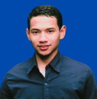

|  | |
| NIM | 10522034 |
|---|---|
| Nama | Hilman Fauji Abdilah |
| Kelas | IS 1 |
| Semester - Angkatan | 2 - 2022 |
| Dosen Wali | Ibu. Dr. Wartika, S.Kom, MT |
| Program Studi | Strata 1 - Sistem Informasi - Teknik dan Ilmu Komputer |
| Kode Mata Kuliah | 05169 |
|---|---|
| Nama Mata Kuliah | Komputer Aplikasi Teknologi Informasi |
| Dosen Pengampu | Bpk. Rauf Fauzan, M.Kom |
| Perkuliahan | Praktikum |
| Jadwal | Jum'at, 15.20 s.d 17.50 |
| Ruang | LAB-4 |
Catatan : Referensi halaman ini diambil dari tugas mata kulaih KATI
« Kembali ke Home